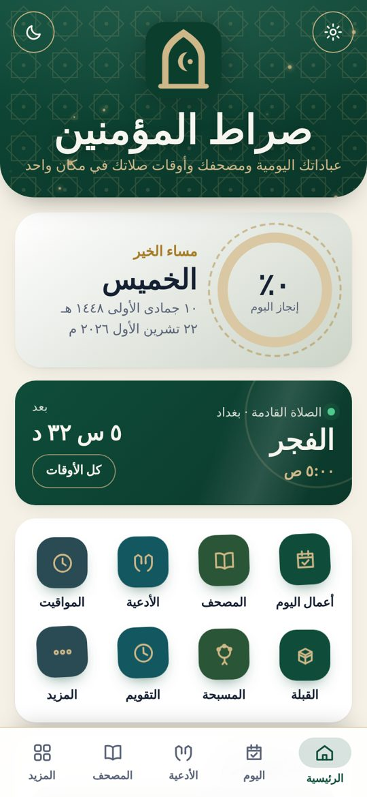
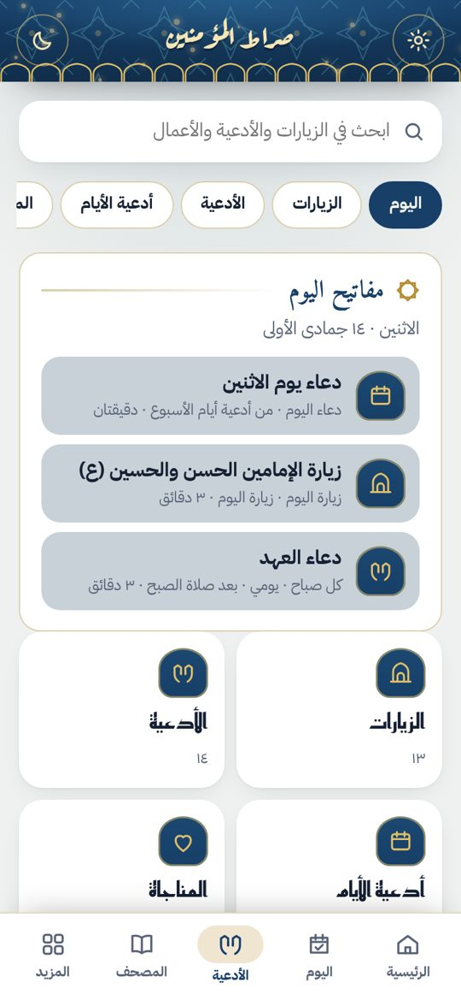
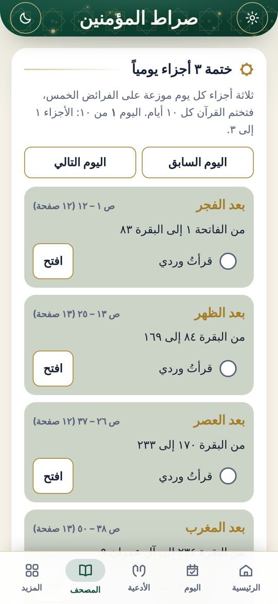
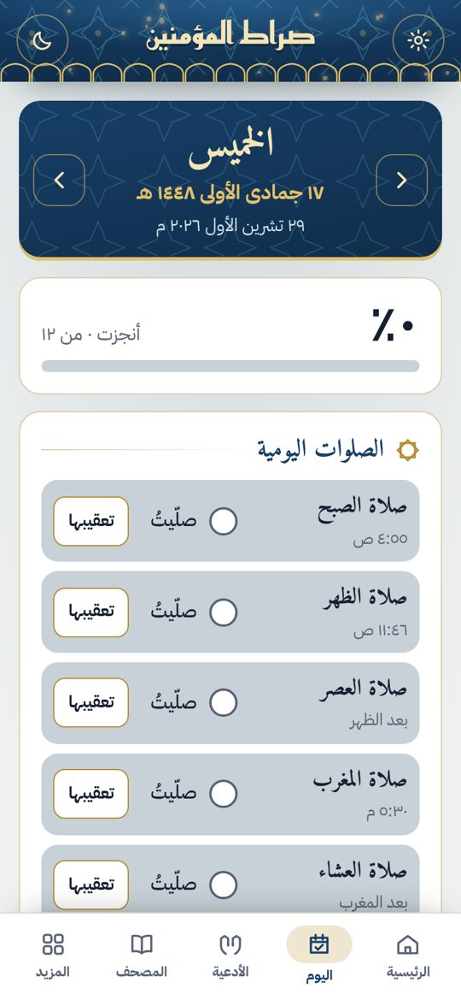

طريقة التثبيت
- اضغط «تحميل التطبيق لأندرويد».
- افتح الملف sirat-almuminin.apk بعد اكتمال التحميل.
- إذا طلب الهاتف ذلك، اسمح بتثبيت التطبيقات من هذا المصدر.
- اضغط «تثبيت».
إذا كانت عندك نسخة قديمة فثبّت الجديدة فوقها مباشرة، وستنتقل بياناتك تلقائياً. وإذا ظهر تحذير من Play Protect فاضغط «مزيد من التفاصيل» ثم «التثبيت على أي حال»؛ يظهر لأن التطبيق غير منشور على متجر Google Play.
ما في التطبيق
- أعمال اليومالصلوات والأذكار والأعمال اليومية مع نسبة الإنجاز.
- المصحف الشريفقراءة كاملة مع البحث والعلامة والتلاوة.
- الزيارات والأدعيةالزيارات والأدعية والمناجاة وأعمال الشهور.
- أوقات الصلاةحسب تقويم مكتب السيد السيستاني، مع الإمساكية وتنبيه الأذان.
- القبلة والمسبحةبوصلة القبلة، وتسبيح الزهراء (ع)، والتقويم الهجري.
- بلا إنترنتيعمل كله من داخل التطبيق، عدا التلاوة الصوتية.
صور من التطبيق



